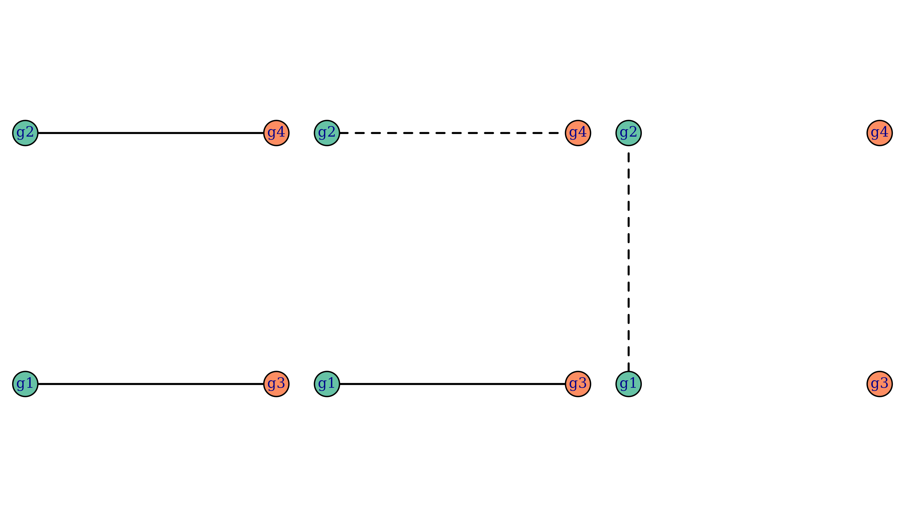
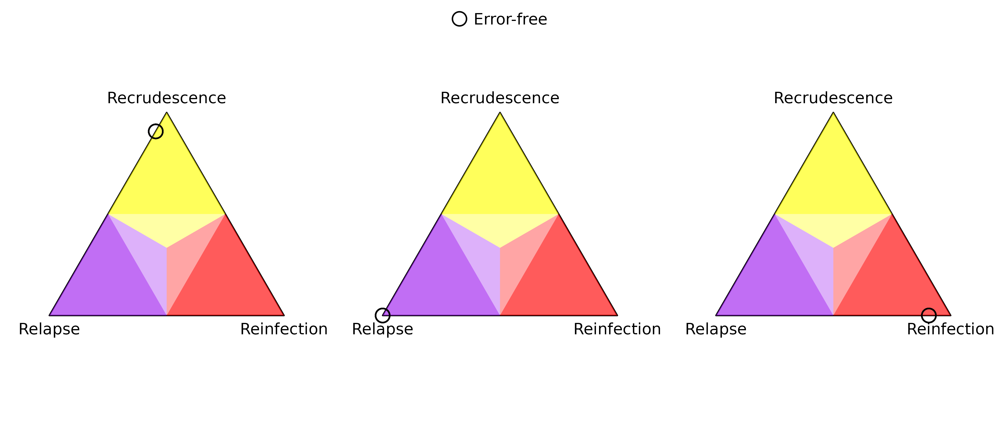
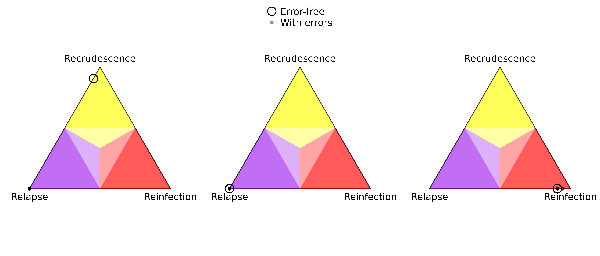
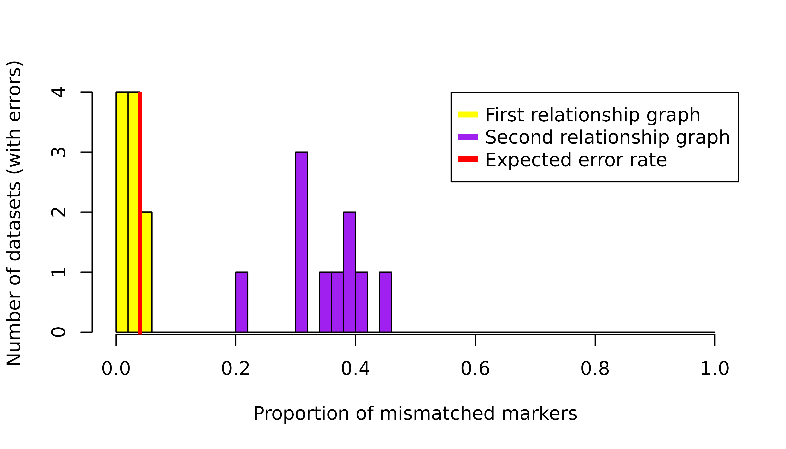

Introduction
Pv3Rs’ statistical model does not account for genotyping errors and de novo mutations, which can lead to misclassification. In this article, we demonstrate that the primary consequence of such model misspecifications is the risk of mistaking recrudescence as near-certain relapse. Intuitively, this is caused by the model’s rigid expectation for all alleles observed from a recrudescence episode to have been observed in the preceding episode. If there are de novo mutations or genotyping false positives in the recrudescence episode that lead to alleles that are not observed in the preceding episode, Pv3Rs will incorrectly eliminate the possibility of recrudescence. The same applies in the case of allele dropouts or genotyping false negatives in the preceding episode.
Mistaking recrudescence as near-certain relapse is inconsequential when recrudescence and relapse probabilities are combined, e.g., in estimations of radical cure efficacy. Otherwise, care needs to be taken when interpreting a near-certain relapse output from Pv3Rs, as it may correspond to a genuine relapse, or a recrudescence that is obscured by genotyping errors and/or de novo mutations. Assuming a small error rate and given a sufficient marker count, these two cases can be distinguished by inspecting the proportion of mismatched markers — markers that are incompatible with recrudescence because there is some allele observed in the recurrence that is absent in the preceding episode. If the proportion of mismatched markers aligns the expected error rate, one can consider rerunning Pv3Rs without the mismatched markers. For a genuine relapse, the proportion of mismatched markers should be higher.
Another consequence of genotyping error, specifically false positivity, is spuriously high multiplicity of infection. Because there is a computational limit on the total genotype count (we do not recommend running Pv3Rs on participant data where per-episode multiplicities of infection sum to nine or more), false positives might render some recurrences unanalysable. Among those that are analysable, false postives might impact probable recrudescence and probable reinfection probabilities because different parasite genotype counts induce different posterior bounds on these states.
Data simulation
Let us generate some data based on the following three relationship graphs, each with four genotypes g1, g2, g3, and g4:
par(mar = c(0, 0.1, 0, 0.1), mfrow = c(1, 3))
suppressMessages(RGs <- enumerate_RGs(c(2, 2)))
for(i in c(2, 6, 34)) {
plot_RG(RGs[[i]], vertex.size = 20)
}
Each relationship graph consists of two parasite genotypes during the
enrolment episode and two parasite genotypes during the recurrence
episode. We’ve chosen these relationship graphs such that only the first
relationship graph is compatible with recrudescence, and only the last
relationship graph is compatible with reinfection. Below is some code to
simulate data based on these relationship graphs. For each relationship
graph, ten data sets are simulated. For each data set, data on 50
octo-allelic markers are simulated per genotype. An internal function
(Pv3Rs:::recombine_parent_ids) ensures the finite nature of
the parasite genome (not accounted for under the Pv3Rs model) is
captured in the simulation.
library(gtools) # for `rdirichlet`
N_CHRS <- 14 # P. vivax has 14 chromosomes
# simulate allele frequencies for multiple markers
# assumes each marker has the same number of alleles
sim_fs <- function(n_m, n_a) {
markers <- paste0("m", 1:n_m) # marker names
n_a_vec <- setNames(rep(n_a, n_m), markers)
lapply(n_a_vec, function(n_a) {
alleles <- letters[1:n_a] # n_a <= 26
fs_unnamed <- as.vector(rdirichlet(1, alpha = rep(1, n_a)))
setNames(fs_unnamed, alleles)
})
}
sim_RG1 <- function(n_m, n_a) {
fs <- sim_fs(n_m, n_a)
init <- lapply(fs, function(f) unique(sample(names(f), 2, TRUE, f)))
return(list(y = list(init = init, recur = init), fs = fs))
}
sim_RG2 <- function(n_m, n_a) {
chrs_per_marker <- ceiling((1:n_m)/(n_m+1)*N_CHRS)
fs <- sim_fs(n_m, n_a)
parents <- lapply(fs, function(f) sample(names(f), 2, TRUE, f))
clone <- lapply(fs, function(f) sample(names(f), 1, prob = f))
sib1 <- Pv3Rs:::recombine_parent_ids(chrs_per_marker)[,1] # full siblings
sib2 <- Pv3Rs:::recombine_parent_ids(chrs_per_marker)[,1] # full siblings
init <- setNames(lapply(1:n_m, function(m) unique(c(parents[[m]][sib1[m]], clone[[m]]))),
names(fs))
recur <- setNames(lapply(1:n_m, function(m) unique(c(parents[[m]][sib2[m]], clone[[m]]))),
names(fs))
return(list(y = list(init = init, recur = recur), fs = fs))
}
sim_RG3 <- function(n_m, n_a) {
chrs_per_marker <- ceiling((1:n_m)/(n_m+1)*N_CHRS)
fs <- sim_fs(n_m, n_a)
parents <- lapply(fs, function(f) sample(names(f), 2, TRUE, f))
sib1 <- Pv3Rs:::recombine_parent_ids(chrs_per_marker)[,1] # full siblings
sib2 <- Pv3Rs:::recombine_parent_ids(chrs_per_marker)[,1] # full siblings
init <- setNames(lapply(1:n_m, function(m) unique(parents[[m]][c(sib1[m], sib2[m])])),
names(fs))
recur <- lapply(fs, function(f) unique(sample(names(f), 2, TRUE, f)))
return(list(y = list(init = init, recur = recur), fs = fs))
}
n_datasets <- 10 # 10 datasets per relationship graph
n_m <- 50 # 50 markers
n_a <- 8 # 8 possible alleles per marker (same as benchmarking)
set.seed(1)
datasets_RG1 <- lapply(rep(n_m, n_datasets), sim_RG1, n_a)
datasets_RG2 <- lapply(rep(n_m, n_datasets), sim_RG2, n_a)
datasets_RG3 <- lapply(rep(n_m, n_datasets), sim_RG3, n_a)
all_datasets <- list(datasets_RG1, datasets_RG2, datasets_RG3)Pv3Rs on error-free data
Before simulating errors, we show the output of Pv3Rs meets our expectations when the model is fit to error-free data.
posts_list <- lapply(all_datasets, lapply,
function(data) suppressMessages(compute_posterior(data$y, data$fs)))
par(mar = c(0, 0.1, 0, 0.1), mfrow = c(1, 3))
for(i in 1:3) {
probs <- do.call(rbind, lapply(posts_list[[i]], function(post) post$marg))
plot_simplex(p.coords = probs, lim.mar = 0.15, p.labels = NA, cex = 2)
if(i == 2) legend("top", pch = 1, pt.cex = 2, bty = "n", inset = 0,
legend = "Error-free")
} In the error-free case, the posterior probabilities concentrate on recrudescence, relapse, and reinfection for the three relationship graphs respectively. Note that there are ten points per simplex: one per data set, ten data sets per relationship graph; all the probabilities per simplex are almost identical and thus the points overlap. The physical size of the plotting marker is not quantitatively meaningful; its role is to visually distinguish other plotting markers in later plots.
Error simulation
Now, we introduce errors into our data. We distinguish three types of misspecifications:
False negatives. The genotyping procedure may fail to detect alleles, e.g., because they are carried by parasites that are present at low densities in the blood sample. Such allele dropouts can incorrectly eliminate the possibility of recrudescence: alleles from a recrudescence episode may not be able to be matched to the preceding episode if it suffers from false negatives. False negatives can also arise from micalls (see below).
False positives. This refers to additional alleles called by the genotyping procedure that are not truly present. Again, false positives may incorrectly eliminate the possibility of recrudescence if the recurrence suffers from false positives.
Miscalls. This refers to mistaking an allele for another allele. One can view this as a false negative and false positive occurring together. De novo mutations can be viewed similarly.
For each marker and each episode, we independently modify the observed data with a probability, using either a false negative, false positive, or miscall. If more than one allele is observed, all three misspecifications have equal probabilities. Otherwise, to avoid missing alleles, a false positive or miscall is simulated with equal probability. (Pv3Rs deals well with missing alleles: including them as errors here would be an eschewal.) We then run Pv3Rs on the modified datasets.
modify <- function(orig, n_a) {
if(runif(1) < 1/3 && length(orig) > 1) { # false negative
return(sample(orig, length(orig)-1))
}
# both false positive and miscall involve an "extra" allele
extra <- sample(setdiff(letters[1:n_a], orig), 1)
if(runif(1) < 1/2) { # false positive
return(unique(c(orig, extra)))
} else { # miscall
return(unique(c(sample(orig, length(orig)-1), extra)))
}
}
modified <- list(datasets_RG1, datasets_RG2, datasets_RG3)
p.modify <- 0.02
set.seed(2)
for(i in 1:3) {
for(j in 1:n_datasets) {
for(k in 1:2) { # episode
for(m in 1:n_m) {
if(runif(1) > p.modify) next
modified[[i]][[j]]$y[[k]][[m]] <- modify(modified[[i]][[j]]$y[[k]][[m]], n_a)
}
}
}
}
mposts_list <- lapply(modified, lapply,
function(data) suppressMessages(compute_posterior(data$y, data$fs)))
par(mar = c(0, 0.1, 0, 0.1), mfrow = c(1, 3))
for(i in 1:3) {
probs <- do.call(rbind, lapply(posts_list[[i]], function(post) post$marg))
mprobs <- do.call(rbind, lapply(mposts_list[[i]], function(mpost) mpost$marg))
plot_simplex(p.coords = rbind(probs, mprobs), lim.mar = 0.15, p.labels = NA,
col = rgb(0, 0, 0, alpha = rep(c(1, 0.3), each = n_datasets)),
cex = rep(c(2, 1), each = n_datasets), pch = rep(c(1, 20), each = n_datasets))
if(i == 2) legend("top", pch = c(1, 20), pt.cex = c(2, 1), bty = "n", inset = 0,
col = rgb(0, 0, 0, alpha = c(1, 0.3)),
legend = c("Error-free", "With errors"))
} As predicted, the presence of errors causes probable recrudescence to be classified as near-certain relapse. (Remember that there are ten probabilities per simplex: one per data set, ten data sets per relationship graph; almost all the probabilities per simplex are the same and thus the points overlap.) Also, there are some datasets corresponding to the third relationship graph where the reinfection probability is overestimated. This is likley due to a false positives changing the posterior bound.
Diagnosis
In a practical scenario, we do not know the underlying relationship graph, and so cannot distinguish between the first two simplices from posterior probabilities (based on data with errors) alone, where Pv3Rs outputs near-certain relapse. As alluded to in the introduction, we propose that these two cases can be distinguished by a simple diagnostic, that is, the proportion of mismatched markers.
# count how many markers have some allele in epi1 but not in epi0
count_recru_incompat <- function(epi0, epi1) {
sum(mapply(function(x, y) !all(y %in% x), epi0, epi1))
}
incompat_prop_RG1 <- sapply(modified[[1]],
function(data) count_recru_incompat(data$y$init, data$y$recur)/n_m)
incompat_prop_RG2 <- sapply(modified[[2]],
function(data) count_recru_incompat(data$y$init, data$y$recur)/n_m)
breaks <- seq(0, 1, 0.02)
h1 <- hist(incompat_prop_RG1, breaks = breaks, plot = FALSE)
h2 <- hist(incompat_prop_RG2, breaks = breaks, plot = FALSE)
counts <- rbind(h1$counts, h2$counts)
barplot(counts, beside = FALSE,
col = c("yellow", "purple"),
space = 0, width = 0.02,
axes = FALSE, offset = 0,
xlab = "Proportion of mismatched markers",
ylab = "Number of datasets (with errors)")
axis(1)
axis(2)
abline(v = 0.04, col = "red", lwd = 3)
legend("topright", legend = c("First relationship graph", "Second relationship graph", "Expected error rate"),
col = c("yellow", "purple", "red"), pch = "-", pt.cex = 4) We see that datasets from the first relationship graph (corresponding to recrudescence with error-free data) have a much lower proportion of mismatched markers compared to datasets from the second relationship graph (corresponding to relapse with error-free data). This shows that our proposed diagnostic is promising for detecting misclassification of recrudescence as relapse. Since the per marker per episode error rate is , we expect a per marker error rate over two episodes, which matches the empirical proportion of mismatched markers for the first relationship graph.
In practice, the proportion of mismatched markers given genuine relapse may follow a different distribution depending on the allele frequencies and the underlying relationship graph. Further simulation studies may be useful for investigating how this diagnostic behaves beyond the scenarios we consider here.